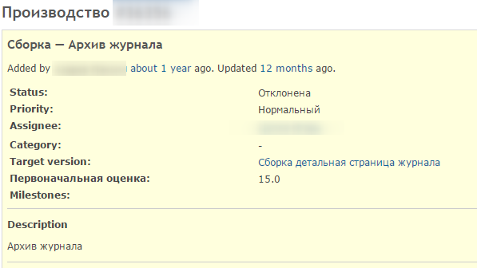

07 Фев 2016
Трекеры для постановки задач и учёта потраченного времени – ничто, если не владеть методологией по их использованию.
При внедрении системы постановки задач (таких как Redmine, Jira или Битрикс24) внимание, зачастую, уделяется интересам руководства: они хотят видеть фронт работ, видеть оценки по затратам и держать руку на пульсе. Но никто не объясняет разработчикам, как им с этим жить, и какой профит им от использования подобных систем.
Предположим, что у вас есть несколько разработчиков, из которых можно выделить более квалифицированных и ответственных, которые могут ставить задачи на «техническом» языке, и менее квалифицированных разработчиков.
Вам нужно сорганизоваться, чтобы делать больше, реже отвлекая друг друга от «потокового» состояния, но не в ущерб обсуждению технических кейсов и обмену опытом.
По сути дела перед нами при постановке задач встаёт две проблемы:
Проблема №1: человеческая память.
Кратковременная память держит в себе 7 +/- 2 объекта. Учитывая загруженность любого технического вопроса количеством разных абстракций – такой объём катастрофически мал.
У человека есть долговременная память, но информация «сбрасывается» в неё только после нескольких повторений и, преимущественно, после ночного сна.
Для того, чтобы хранить информацию о том, что и кому нужно сделать, этот носитель не подходит. Нужно всё записывать.
Проблема №2: отчуждаемость
Представьте себе, что у вас есть вот такой тикет:

Задайтесь вопросом: «Сколько человек нужно для того, чтобы приступить к выполнению этого тикета?». Если менеджер (он же – функциональный заказчик) тут же не подошёл и не объяснил, чего он хочет – то скорее всего разработчику потребуется провести отдельное расследование, чтобы понять, что от него хотят.
Отчуждаемость тикета – это очень важно, в конечном итоге. Если задача отчуждаема, то скорее всего она не столкнётся с другими проблемами, как-то:
Для того, чтобы задачи были прозрачны, я рекомендую оформлять их по шаблону:
Краткое описание сути задачи. Максимум два предложения.
# Шаги по достижению цели
Пошаговая инструкция (прямо по пунктам 1,2,3) что нужно сделать, чтобы решить проблему. Эта глава содержит максимум технических ньюансов и должна быть максимально конкретна.
# Ожидаемый результат
Несколько пунктов, которые по сути являются тестами. Выполнив эти пункты и увидев описанные в них результаты можно убедиться в работоспособности того, что должно работать и неработоспособности того, что не должно работать.
При описании задач крайне не рекомендуется использовать слова-обобщения («все», «как всегда», «прочее», «и т.п.») – это дисциплинирует постановщика продумывать все обстоятельства.
Очень важно при этом уделять время и внимание описанию «Ожидамого результата» - в идеале он должен быть описан так, чтобы его понял даже человек «с улицы» и смог по нему определить, готова задача или нет. Согласно личным наблюдениям, прописывание именно этой главы в постановке задачи, позволяет резко снизить процент багов – даже самые ленивые разработчики начинают проверять, что сделали.
Итак, задачи поставлены, работа кипит, остался один вопрос: а будет ли она сделана в срок? Можно ли сейчас сделать что-то, чтобы работа была сделана даже раньше срока?
Конечно можно!
Но для этого надо знать, куда смотреть, а разработчики должны давать обратную связь в течение рабочего процесса. Redmine позволяет проставлять процент выполнения и выставлять статус задачи.
О статусах и переходах между ними написана не одна статья: всё сильно зависит от конкретного производства и того, как принято работать в команде.
Предположим, что наш рабочий процесс описывается следующими общими шагами:
Концепция (в голове у менеджера) -> Детализация технарём-тимлидом (возможно вместе с менеджером) -> Исполнение -> Проверка -> Выкат на «боевую» площадку
И мы обязательно отмечаем у задач:
Уже эти параметры позволят нам практически в режиме реального времени отловить проблемы, через которые может утечь наша продуктивность, счастье и деньги, как-то:
Рассмотрим конкретные критерии и конкретные действия, которые надо предпринимать в каждой из ситуаций.
Если (время, потраченное на задачу > 80% от оценки) и (процент выполнения < 60%), то
Технический затык у разработчика, либо плохо детализированная задача. Тимлиду нужно пообщаться с разработчиком, устно.
Если (время затраченное превышает первоначальную оценку в 2 раза), то
Либо недостаток компетенции тимлида, либо хаос в процессах. Нужно посмотреть историю тикета, потом пообщаться с исполнителем. Так вы можете выловить «бесконечную» задачу, которую будут завершать на протяжении долгих недель.
Если (время на баги по больше 30% от времени на плановые работы по какому-то функционалу), то
Низкий уровень компетенции у разработчиков. А значит нужно либо менять команду, либо учить команду. Третьего не дано.
Если (время технического долга, которое предвещают разработчики, в часах > 50% от суммы плановых и срочных задач, которые порождают этот техдолг), то скорее всего это - фонтан меняющихся или срочных требований от менеджмента. Фонтан надо затыкать.
Если (времени потраченного удалённым разработчиком < 5 часов в сутки), то разработчик приуныл, надо его взбодрить.
Если (оценка задачи более чем на 20% отличается от потраченного времени), то у тимлида трудности с оценкой задач. А значит нужно либо разгрузить тимлида, чтобы у него было время погружаться в детали, либо добиться лучшей проработки задач.
Если (срочная задача, на которую ушло более 4 часов), то либо творится нездоровая фигня с отчётностью, либо поток безумия от менеджмента. Самое важное в такой ситуации – уделить пристальное внимание техническому долгу! Ибо как раз «срочные» но большие задачи порождают много-много проблем.
Если (в задачу списало время более 3х человек), то грядёт проблема с отчуждаемостью задачи! Важно уделить внимание отчуждаемости задачи, проработанности её описания.
Указанный список далеко не полный, и я не ставил перед собой цели расписать все кейсы, которые говорят о наличии проблем: он слишком сильно зависит от вашего конкретного бизнеса.
Вы можете начать с указанных критериев, регулярно просматривая состояние задач, и постепенно выявите свои собственные. И помните: кто предупреждён – тот вооружён, и чем раньше выявлена проблема – тем дешевле её исправлять!